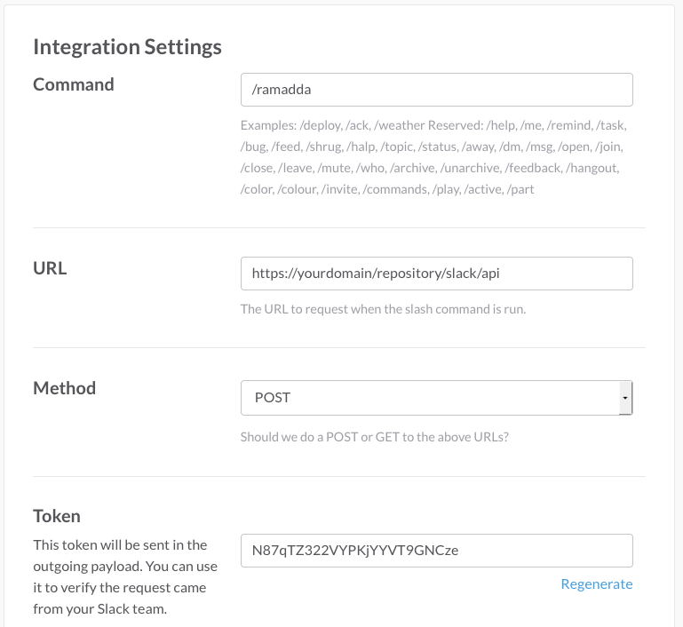
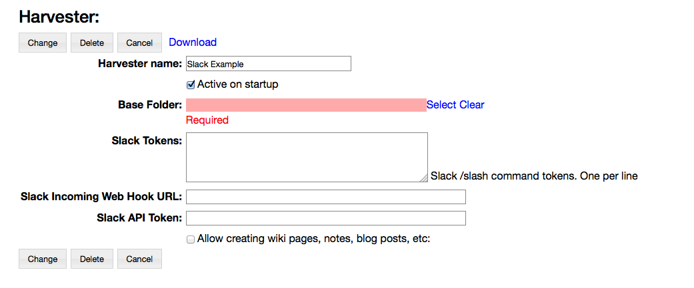

Slack Shell
To set this up -
- Create a Slack Slash Command. In Slack go to the Integrations page for your team. Under Configured Integrations select Slash Commands and add a new Slash Commands integration. You can choose any command (I've used "/r" or "/ramadda").
- To configure this Slash Command enter your RAMADDA URL -
https://${hostname}${root}/slack/api
- in the Configuration page.
 - Before Saving the command copy the Token, we'll use it to configure things on the RAMADDA side.
Now, go to your RAMADDA repository and log in as an admin. You will create a RAMADDA Slack Harvester.
- Under the Admin->Harvesters page add a New Harvester and select Slack Harvester.
 - The "Active on Start Up" enables the harvester.
- Copy the token you got from Slack into the harvester tokens field. You can have any number of Slash commands that point to this single harvester.
- Select the area in RAMADDA you want to provide access to. Under the Base Folder select a RAMADDA entry.
- The Slack Incoming Web Hook URL is the way that RAMADDA can talk back to Slack.
To enable this go back to your Slack Team. Under the Integrations page create an Incoming Web Hook and copy the URL that Slack provides into the RAMADDA harvester.
- The Slack API Token allows RAMADDA to publish files back to Slack.
Go the Slack's Web API page and copy the API token to the RAMADDA Harvester.
- Save the Slack Harvester and you should be good to go.
Slack Shell Commands
You can do a number of things in RAMADDA through Slack.Search:
/r search some search text
The interface lets you navigate around RAMADDA like a command line:
#Show the current entry /r pwd #List the sub-entries of the current entry /r ls #change directory to a sub folder /r cd some folder #change directory to the top-level entry /r cd #cd up a couple /r cd ../..You can enter multiple commands on one line separated by a semi-colon:
/r pwd; ls; cd;
Create wiki pages, web logs and other entries
/r new <folder or wiki or blog or note> New entry name | Optional description or wiki text
You can also define a slash command that has the RAMADDA command predefined. So you can add a slash command, e.g. "/cd", that maps to the URL:
https://${hostname}${root}/slack/slack/api?ramadda_command=cdCreate multiple slash commands, e.g.:
https://${hostname}${root}/slack/slack/api?ramadda_command=ls https://${hostname}${root}/slack/slack/api?ramadda_command=pwd https://${hostname}${root}/slack/slack/api?ramadda_command=newNow in Slack you would just do:
/cd <some_entry> /ls /etc
Search
You can search your RAMADDA repository from slack by doing:/r search <terms>RAMADDA provides federates search across multiple providers. To choose a specific provider do:
/r search -provider <provider id> <terms> e.g: /r search -provider google zanzibar /r search -provider wolfram zanzibar Or: /r search -google zanzibar /r search -wolfram zanzibar /r search -duckduckgo zanzibar /r search -flickr zanzibar /r search -youtube zanzibar /r search -arxiv zanzibarYou can set up a Slash command that searches a particular provider. For example, I like to have "/w" mapped to the Wolfram/Alpha search:
https://geodesystems.com/repository/slack/api?ramadda_command=search&provider=wolfram
Handling API Tokens
You may end up having a number Slack Harvesters and Slack Team imports where each requires an API token. You can simplify management of the API tokens by adding a properties file to your RAMADDA server home directory. This properties file contains an property that specifies an API token. It may be any name, e.g.slack.api.token=<API token from Slack>Instead of entering the actual API token in the Harvester or in the Team Entry you can just specify the property, e.g. "slack.api.token"